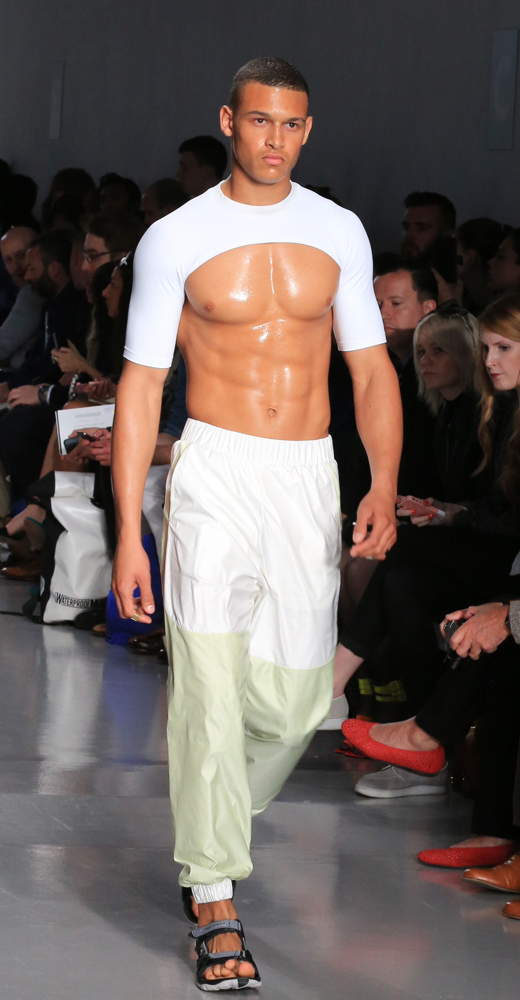

        <!DOCTYPE html>
        <html>
          <head>
          <style>
             body{
              font-size: 15px;
              font-weight: 800;

              font-family: sans-serif;
              color:black;
        
              }
            </style>
          </head>
        </html>
        <a href="index.html" style="margin-right: 100px;">Home</a>
        <a href="css.html" style="margin-right: 100px;">About </a>
        <a href="j.html" style="margin-right: 100px;">History</a>
        <a href="py.html" style="margin-right: 100px;"> Resources</a>
        <a href="shoks.html" style="margin-right: 100px;">Piercing</a>
        <a href="ideas.html" style="margin-right: 100px;"> Ideas</a>
        <a href="planning.html" style="margin-right: 100px;">Planning</a>
        <a href="features.html" style="margin-right: 90px;">features</a> 
        <a href="login.html" style="margin-left: 1290px;" >Login</a>
        
        <link rel="stylesheet" href="index.css">
<!DOCTYPE html>
<html lang="en">
<head>
    <meta charset="UTF-8">
    <meta name="viewport" content="width=device-width, initial-scale=1.0">
    
    <title>Fashion</title>
    <h1>Fashion</h1>
    <h2> Fashion refers to anything that becomes a rage among the masses. Fashion is a popular aesthetic expression. Most Noteworthy, it is something that is in vogue. Fashion appears in clothing, footwear, accessories, makeup, hairstyles, lifestyle, and body proportions. Furthermore, Fashion is an industry-supported expression. In the contemporary world, people take fashion very seriously. Fashion is something that has permeated every aspect of human culture.Whereas a trend often connotes a peculiar aesthetic expression and often lasting shorter than a season, fashion is a distinctive and industry-supported expression traditionally tied to the fashion season and collections.</h2>
    <h2> Write 10 Reasons Why Fashion is Important in Our Life :</h3>
    <h2> Fashion is not just wearing extravagant designer outfits, carrying the most precious jewelry and doing high class makeup. Rather it is a more absolute term which implies everyone has a different idea for fashion. And how you carry yourself, the grace and the sophistication involved in making you who you are play an important role in defining fashion for you. There are ample reasons to why fashion is important as it not just makes you look good but above all it is an expression or art and self in utmost exotic and mesmerizing ways. Let us find out is fashion important or not by seeing these points on fashion importance below:</h2>
    <h2>1. Fashion helps in creating first impression:</h2>
    <h3>We all have heard,” first impression is the last impression” and despite the controversies surrounding we all tend to follow it. The first 5-8 seconds of screening any person may help us decide whether or not we would connect with them. The way you wear outfits, accessories, jewelry and carry yourself is very important in creating a lasting impact. Fashion not just makes you be sure of yourself but also helps you show yourself as something or someone you wish for yourself</h3>
    <h2>2. Fashion is self expression through art:</h2>
    <h3>Art is the essence of life and it helps in creative expression of self. The more we create art in our appearance the more fashion it becomes. All the things that we put on with a certain amount of creativity makes for a great fashion statement. Art is all about finding your peace and inner strength. The way you dress yourself speaks about your fine taste and love for art.</h3>
    <h2>4. Fashion helps in boosting confidence and is all about self actualization:</h2>
    <h3>The more you feel right about an art the more you wear it as fashion thus boosting your confidence. There are immense benefits of fashion as they help in self actualization accomplishment for you. Whatever you wear defines you and makes you comfortable</h3>
    <h2>5. Fashion has become an intrinsic part of entertainment industry:</h2>
    <h3>Fashion has become thee most important part in entertainment industry. Everything that happens in the tabloid world is all about fashion and this fashion drives us all towards the fun. Every movie, TV show or post we see is all about fashion thus it has the capability to drive the entertainment world.</h3>
</nav>


    
    <h2>6. Fashion helps in revealing your spontaneous side:</h2>
    <h3>Making you versatile, fashion helps in bringing your spontaneous side out. You become self aware and take things the way you like for your style Fashion helps you in styling and dressing yourself with a hint of spontaneity which is essential to keep your individuality alive</h3>
    <h2>7. Fashion also brings out talent in people:	</h2>
    <h3>The more talented get to portray fashion not just for themselves but for others too. Models, actors and socialites adorn the masterpieces threaded by some really artistic designers. This gives them a platform to bring out their creativity and talent</h3>
    <h2>8. Fashion keeps history and religion alive:</h2>
    <h3>Most of the fashion is a result of our belief, culture and tradition. It also brings out history and old belief too. All forms of art like music, dance, paint and architecture help in defining fashion and its current trends</h3>


    <h2>9. Fashion helps in uniting entire world:</h2>
    <h3>See the fashion weeks in Milan, NY and else where; people all over the world come to a common platform for a common reason; fashion. Fashion has global significance and whatever is stylish for us is liked and appreciated far and wide</h3>
    <h2>10. Fashion inspires our society:</h2>
    <h3>Fashion defines popular culture and it helps in inspiring our society and social norms. Look at plus sized models, maternity wear, metrosexual wear and more. All of these are an example of how our society embraces various strata and brings out inspiration for each and everyone.
        Share ahead and keep writing us, we love hearing from you!</h3>

        <h4>Written by </h4>
        <h4>Avinab khanal</h4>
        <a href="https://www.facebook.com/groups/510080456321025">For more fashion tips or to buy the fashion clothes join this facebook group</a>
        <h3>For knowing more fashon tips or buying new fashion things please visit this public group. </h3>
        <a href="https://www.instagram.com/avinabkhanal/">Follow me at instagram</a>
        <h3>For knowing more about pokemon you can follow me or message me in instagram </h3>
        <a href="https://www.facebook.com/groups/1157978867899866">Join our facebook group pokefanpage group</a>
        <h3>For knowing more fashon tips or buying new fashion things please visit this public group. </h3>
        <a href="https://www.facebook.com/crumblemagnetism">Follow or like our pokefanpage</a>
        <h3>For knowing more about pokemon  please visit this public group. </h3>
        <a href="https://www.youtube.com/channel/UCk6EP51TppVT261kxDnosGg">Please like and subscribe our youtube channel</a>
        


        